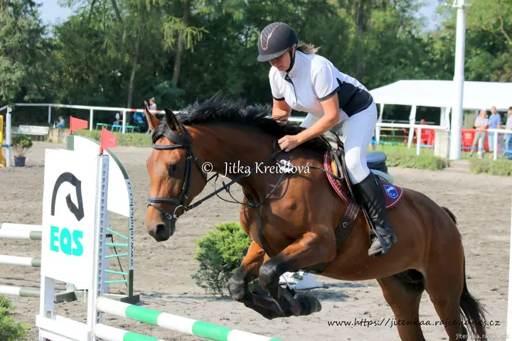
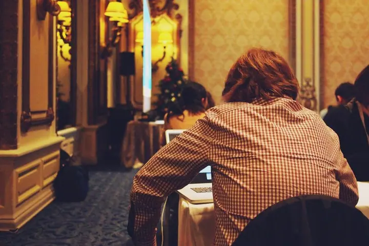
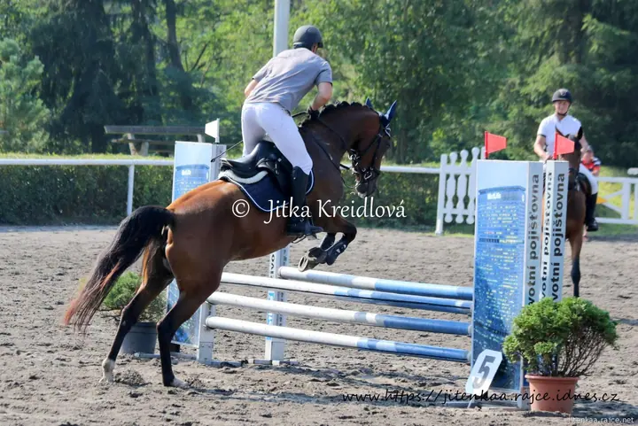
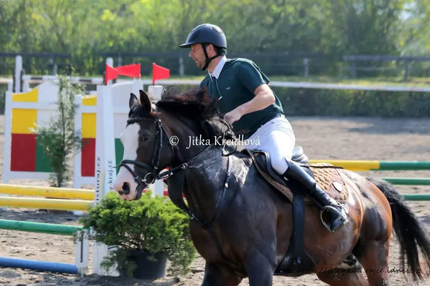
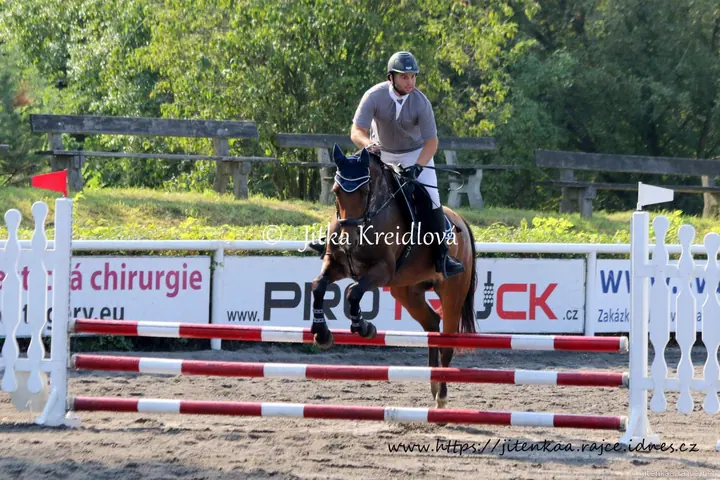
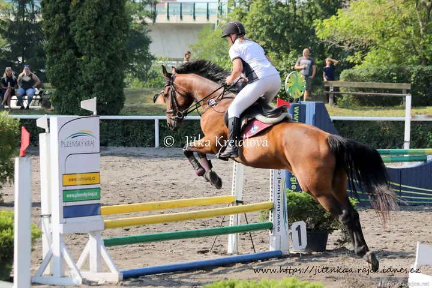

01 / 03
Sport a jezdecké závody
Fotím sportovní akce a závody, mimo jiné parkur. Z každé akce vzniká obsáhlé album, ve kterém si jezdci i diváci najdou svůj záběr.
Zeptat se na termín→








Sport, zvířata a lidé v pohybu
Zeptat se na termín →(01) Ahoj
Jmenuji se Jitka Kreidlová a nejčastěji fotím zvířata , sport a lidi kolem sebe . Jsem fotografka amatérka a pořád se učím. Fotky zveřejňuji v obsáhlých albech, protože každého zaujme jiný snímek.
(02) Co fotím
01 / 03
Fotím sportovní akce a závody, mimo jiné parkur. Z každé akce vzniká obsáhlé album, ve kterém si jezdci i diváci najdou svůj záběr.
Zeptat se na termín→02 / 03
Zvířata fotím ze všeho nejčastěji. Koně v pohybu, na kolbišti i mimo něj.
Zeptat se na termín→Dále nabízím
Fotím lidi a děti podle jejich přání. Když máte nápad na focení, napište mi a domluvíme se.
↗(04) Postup
Od první zprávy po hotovou galerii.
Krok 1 z 4
Ozvěte se e-mailem nebo přes Facebook a popište, co byste chtěli nafotit.
Krok 2 z 4
Probereme vaše přání, místo a termín. Řídím se tím, co je pro vás důležité.
Krok 3 z 4
Fotím průběžně a s rezervou, abych zachytila co nejvíc momentů. U sportu to platí dvojnásob.
Krok 4 z 4
Fotky zveřejním v albu, kde si můžete v klidu projít všechny záběry a vybrat ty, které se líbí právě vám.
Každého může zaujmout jiný snímek.
(05) Za objektivem
Fotím zvířata, sport, lidi i děti. Hodně času trávím u jezdeckých závodů, kde se snažím zachytit koně i jezdce ve chvíli skoku. Na Rajčeti mám přes šest set alb a stále přibývají další.
Moje Rajče není výstavní galerie toho nejlepšího, beru ho spíš jako svou fotobanku. Slouží mně i lidem, které fotím, a řídím se podle jejich přání. Nejednou mě překvapilo, která fotka se komu nakonec líbí nejvíc, a proto zveřejňuji tolik záběrů.
Považuji se za fotografku amatérku a snažím se neustále učit. Pokud máte zájem o focení, nějaký tip, nápad nebo dotaz, napište mi na e-mail nebo na Facebook.
Jitka
Jitka Kreidlová · Fotografka sportu a zvířat
Každému se líbí něco jiného. Proto zveřejňuji hodně snímků, aby si každý mohl najít ten svůj.
Ne, považuji se za fotografku amatérku a pořád se učím. Fotím ale ráda a podle přání lidí, které fotím.
Nejlépe e-mailem na kreidlik@seznam.cz, nebo na Facebooku pod jménem Jitka Kreidlová - Amateur photographer.
Všechny fotografie jsou chráněné autorským právem. Pokud je chcete použít, napište mi a domluvíme se.
(07) Kontakt
Napište pár vět o tom, co si představujete, a termín, který se vám hodí.
kreidlik@seznam.cz